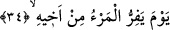

burada duyulup dinlenilen ve kulak verilen sese mecâzen “kulak veren, dinleyen” ismi
verilmiş olmaktadır. Bazı âlimlere göre “es-sâhha” kelimesinin anlamı; “şiddetle
çarpma sonucu kulakları sağır eden çığlık ve ses” demektir. Bazılarına göre ise bu
kelime “sahhahu bi’l-hacer/birisi birine taşla vurdu” tâbirinden türemiştir. Bu son iki
anlam açısından ortada bir mecaz durumu yoktur. Aksine kelime hakîkî anlamında
kullanılmış demektir.
34. İşte o gün kişi kardeşinden,
O gün insanoğlu bu saydığımız yakın akrabalarından yüz çevirir, onlarla birlikte
olmaz. Dünyada olduğu gibi onların hâlini, durumlarını sormaz. Çünkü kendi başının
derdine düşmüştür. Çünkü bilir ki onlar kendisine hiçbir fayda veremeyeceklerdir.
Âyetin başındaki “gün” anlamına gelen “yevm” kelimesi, gizli bir “a’nî/şunu
kasdediyorum” fiili ile mansubtur. Dolayısıyla bu âyet az önce geçen “es-sâhha” yâni
kulakları sağır eden ses kelimesinin tefsiri olmuş olmaktadır.
35. Annesinden, babasından,
Bu âyetlerde akrabalar kişiye sevimli olanından daha çok sevimli olana doğru
sıralanarak dizilmiştir. Böylece âyette bir mubâlağa (abartı) unsuru elde edilmiş
olmaktadır. Konuya daha yakından bakacak olursak; anne-baba kişiye kardeşinden daha
yakındır. İnsan kalbi anne ve babasına bağlılığına oranla eşine, çoluk ve çocuğuna daha
çok bağlıdır.
36. Eşinden ve çocuklarından kaçar.
Bu âyet-i kerimenin kadınları kapsamadığı düşünülmemelidir. Tam tersine burada
sıralanan hükümlere kadınlar da erkekler gibi dâhildirler. Ancak kadınlar, arapların söz
söyleme ve ifâde sanatları gereği erkeklerin kipleri içerisinde ifâde olunmuşlardır. Bir
başka anlatımla; kadınlar arapça söz sanatı açısından çoğu kez erkeklerin içinde
mütalaa olunarak onlara ayrı bir ifâde kipi getirilmemiştir.
Abdullah b. Tâhir el-İbhiri (k.s.) der ki: Kişi yukarda sayılan akrabalarının âciz